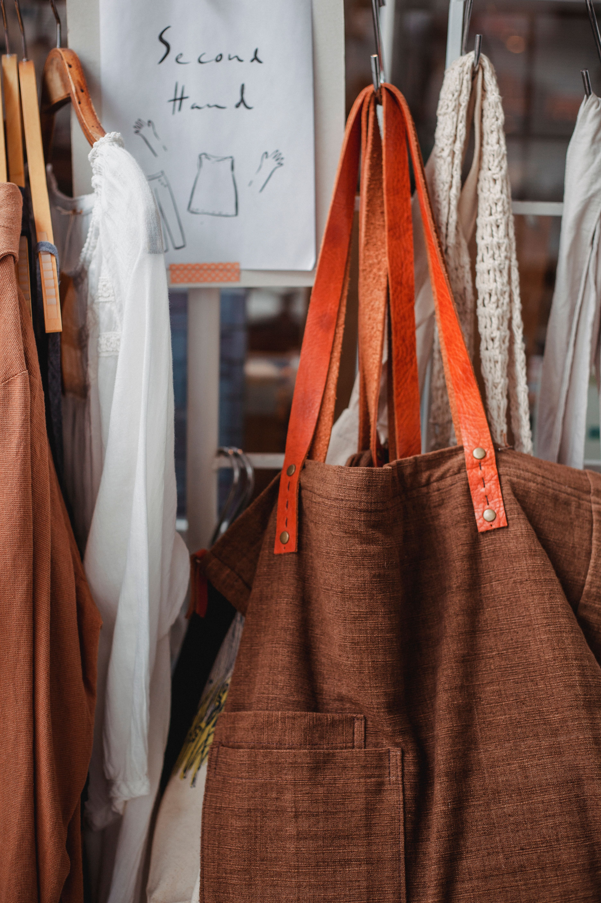
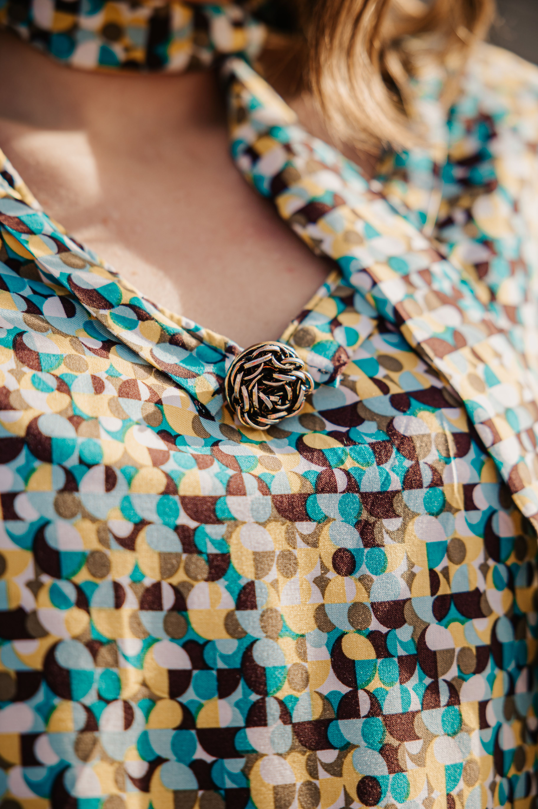
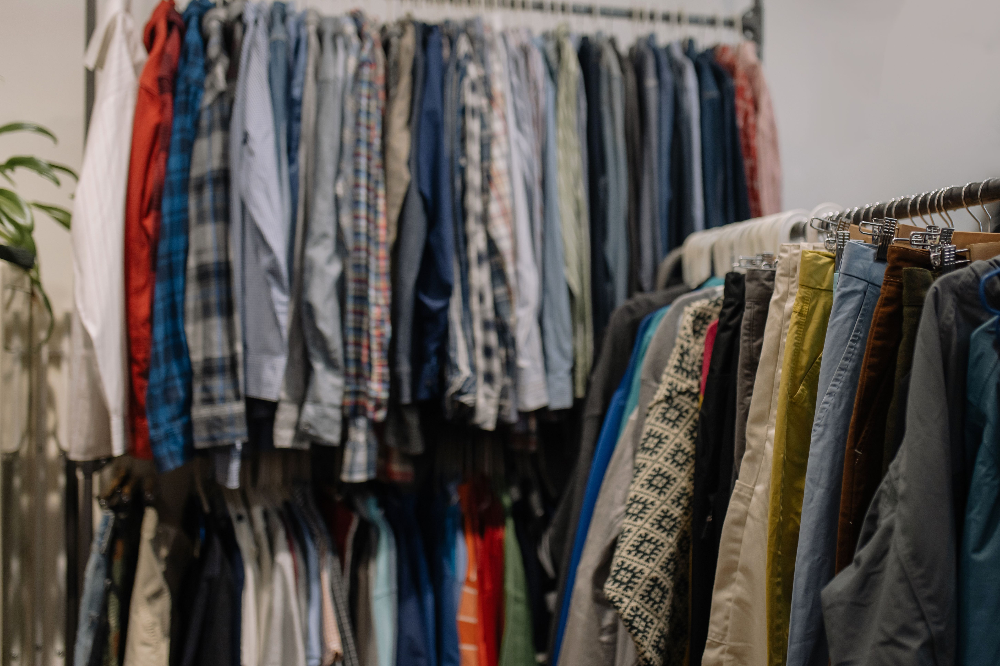

Voici une autre piste, volontairement différente. Ce qui vous plaît dans l'une ou l'autre devient le point de départ.



Frip'ouilles confectionne des pièces uniques à partir de linge de maison ancien : chaque vêtement a ses propres motifs, fait main, introuvable ailleurs.
Un atelier couture gratuit chaque premier samedi du mois, ouvert à tous. Une boutique qui vit aussi en collectif, avec deux autres créatrices locales.
Avis fictifs, widget réel connecté à la mise en ligne.
9 rue du Mirail, 40000 Mont-de-Marsan · Mardi-samedi, 10h-19h · 07 81 87 34 35 · fripouilles.vintage@gmail.com